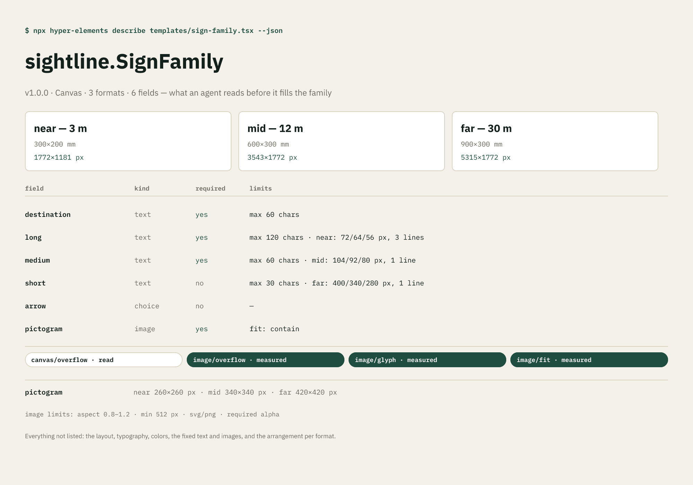
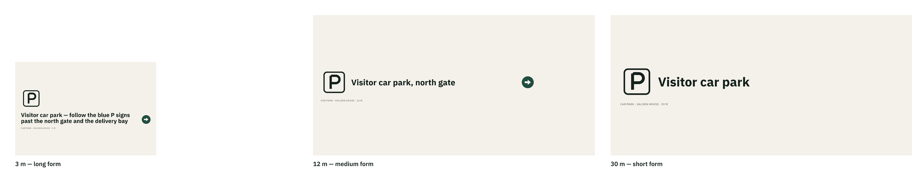
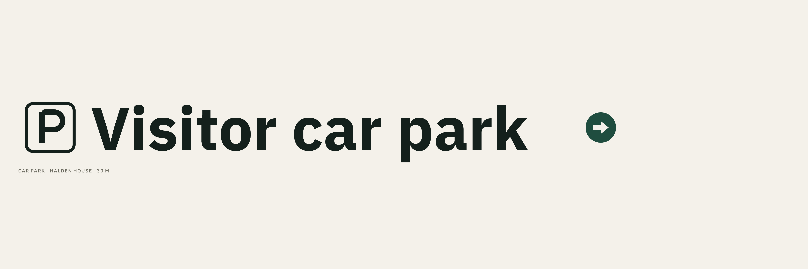
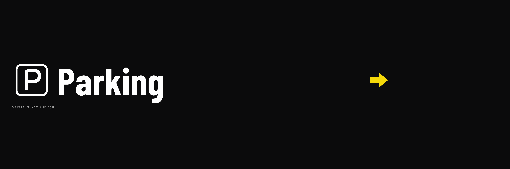

Sightline
A wayfinding sign family where one directory of destinations renders at 3 m, 12 m and 30 m — and the distance changes the copy, not just the type size.
When the copy cannot fit at a distance, the template refuses with image/fit
instead of silently shrinking or truncating it.
The contract an agent fills

npx hyper-elements describe templates/sign-family.tsx --json.
One destination, three distances

The refusal that demands content
This is a 30 m sign with no short form. The template refuses, names the field and says roughly how much to cut. Nothing is drawn truncated.
$ npx hyper-elements check designs/_refusal/car-park.values.json error image/fit ... it takes 4 lines at 280px, its smallest size, and fits 1: cut about 63 characters (required by sightline.SignFamily) rule image/fit (far): failed fit short: no size fits # exit 1
Write the four-word short form and the same destination renders: fit short: 400px
(fits at 400, 340, 280), exit 0.
Two buildings from one template


The rules that run
canvas/overflow image/overflow image/glyph image/fit
All four are required on every design, and each reports passed, failed or not-run. A rule that did not run never counts as passed.